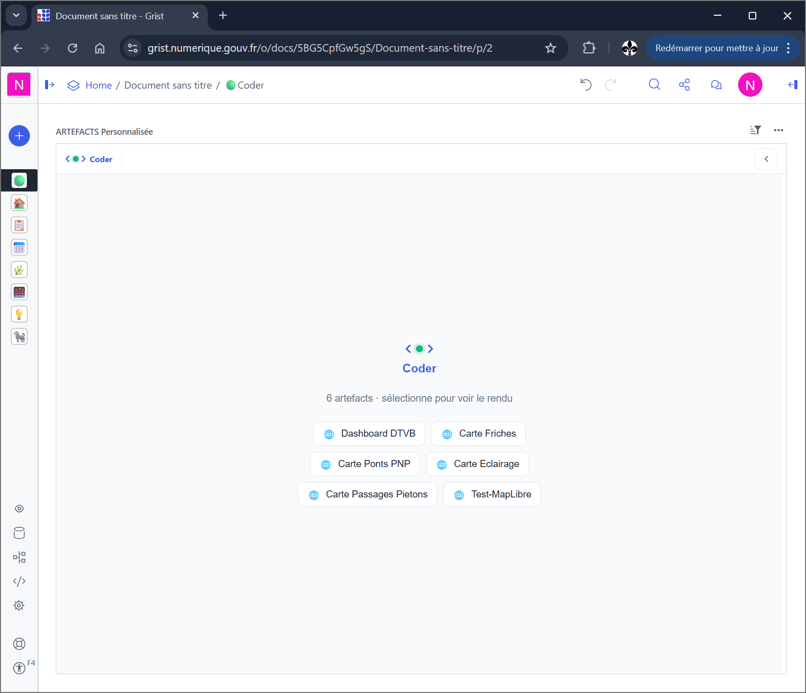
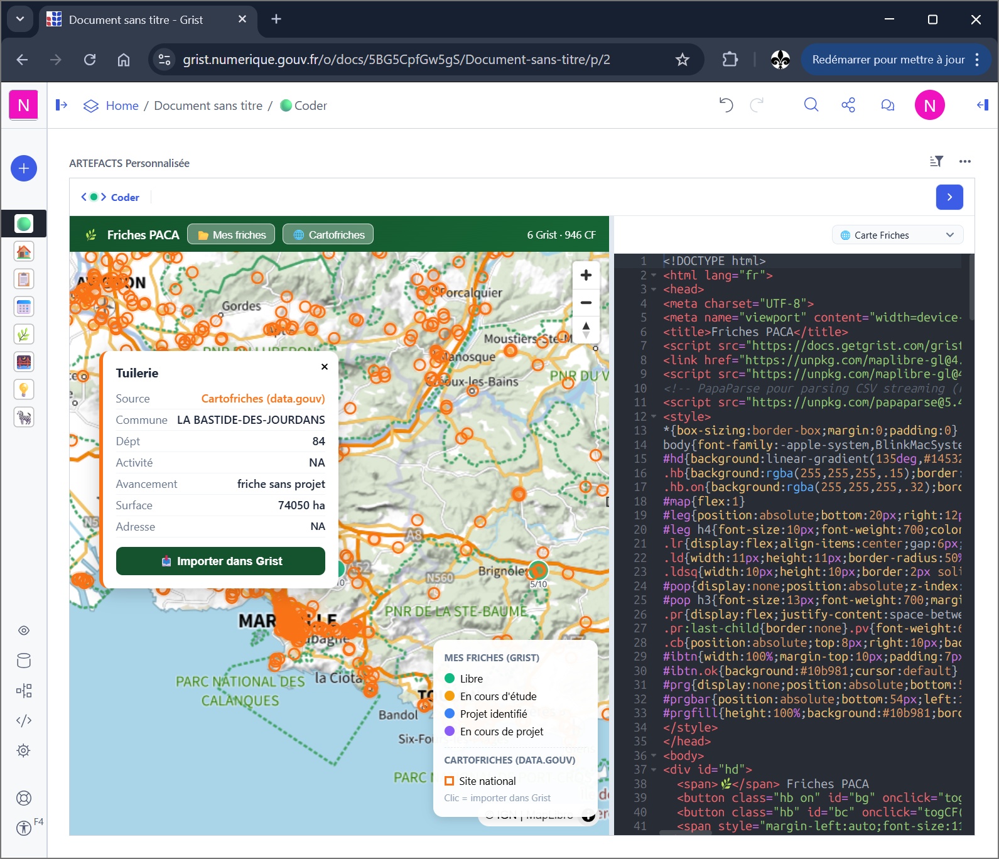

Claude Code
claude mcp add grist-coder --transport http http://localhost:8742/mcp \
--header "Authorization: Bearer <clé Grist>" \
--header "X-Grist-Site: https://<instance>"Un document Grist devient une application métier complète — tables, interfaces, logique, intégrations — construite par l'IA, et qui continue de tourner quand le serveur s'arrête.
Serveur MCP
Chiffres relus dans le code source à chaque génération de cette page — ils ne peuvent pas dériver de ce que le serveur expose réellement.
io.github.nic01asFr/gristcoderstreamable-http — 2025-03-26, sur /mcpghcr.io/nic01asfr/grist-coderclaude mcp add grist-coder --transport http http://localhost:8742/mcp \
--header "Authorization: Bearer <clé Grist>" \
--header "X-Grist-Site: https://<instance>"{
"mcpServers": {
"grist-coder": {
"type": "http",
"url": "http://localhost:8742/mcp",
"headers": {
"Authorization": "Bearer <clé Grist>",
"X-Grist-Site": "https://<instance>"
}
}
}
}La promesse
Un document Grist contient déjà les données, les droits et le partage. Ce qui lui manque pour être une application — des écrans, de la logique, des déclencheurs — se construit ici par la conversation, et reste rangé à l'intérieur du document.
En images


Fonctionnalités
Données (tables et formules), interface (artefacts et pages Grist), logique (SQL, UserActions, upsert), intégrations (webhooks vers l'extérieur). Les quatre se construisent depuis la même conversation, sans changer d'outil en cours de route.
Quand un tableur ne suffit plus, mais qu'un développement complet est hors de portée.
Le widget est un écran coupé en deux : l'éditeur à gauche, l'aperçu à droite. L'écriture est incrémentale — on lit le code, on remplace un fragment, on regarde. Les erreurs de rendu remontent avec leur numéro de ligne au lieu d'un échec muet.
Pour corriger une interface sans jamais quitter Grist.
La publication fige l'artefact dans une section du document et compile ses imports npm. Le résultat est un widget ordinaire : il ne connaît plus le serveur, et continue de fonctionner si celui-ci disparaît.
Pour livrer quelque chose qui ne dépend plus de toi.
Près de 2 800 lignes de JavaScript font tourner une boucle d'agent à l'intérieur même du widget : le document peut se construire sans client MCP externe. La configuration du modèle est servie par le serveur, et la clé ne quitte jamais celui-ci.
Quand il n'y a pas de client MCP en face, juste un navigateur.
Plutôt que deviner, l'assistant pose la question dans le widget : choix, formulaire, confirmation, import de données externes. La réponse revient dans la conversation et la construction reprend où elle en était.
Pour les décisions qu'un modèle n'a pas à prendre seul. En bêta.
Le chart Helm installe un serveur personnel, protégé par jeton et verrouillé sur son propriétaire au premier contact. Un connecteur OAuth 2.1 embarqué fait du serveur son propre fournisseur d'identité, ce qui évite de coller une clé d'API dans un client.
Pour mettre en ligne sans passer par un service multi-locataires.
Prise en main
Coder s'installe comme widget personnalisé sur une page du document. Il s'enregistre auprès du serveur et ouvre une session.
L'assistant qualifie le besoin avant de toucher à quoi que ce soit. À ce stade, il n'a même pas accès aux outils d'écriture.
Tables, colonnes, relations. Les outils d'interface n'apparaissent qu'une fois les données posées.
Le code s'écrit dans l'éditeur et l'aperçu se rafraîchit. Ce qui ne va pas se corrige par retouches, pas par réécriture.
L'artefact est figé dans le document. Il n'a plus besoin du serveur, et l'utilisateur final ne voit qu'une application.
Cas d'usage
Le fichier fait vivre un processus réel, mais chaque nouvelle demande se traduit par une colonne de plus et un onglet de plus.
Sans interface propre, on empile jusqu'à ce que plus personne n'ose y toucher.
Le besoin est clair et la file d'attente est longue. Ici, la personne qui connaît le métier construit et corrige elle-même.
Un outil livré six mois trop tard décrit un métier qui a changé entre-temps.
Serveur auto-hébergé, un déploiement par utilisateur, clés gardées côté serveur. Le document ne part pas chez un tiers pour être outillé.
Un service mutualisé demanderait de confier le document à quelqu'un d'autre.
Mise en ligne
Le serveur ne sert pas qu'en local. Déployé en ligne, il expose la même surface MCP, avec des gardes qui ne dépendent pas de la bonne volonté du client.
Un jeton d'application ferme /mcp, /register et le proxy sortant. La comparaison se fait en temps constant. Laissé vide en local, il n'y a pas de garde et rien ne change.
Le premier compte Grist qui s'enregistre devient propriétaire du serveur ; tout autre compte est refusé. Une identité de repli, non résolue, n'épingle jamais rien — sinon elle verrouillerait le serveur sur personne.
Un connecteur OAuth 2.1 complet : découverte, enregistrement dynamique du client, autorisation, jeton, PKCE S256. La clé Grist est donnée une fois au consentement et reste sur le serveur ; le client ne reçoit qu'un jeton opaque, expirable et révocable.
La clé fuyait par l'URL d'appel dans les messages d'erreur. Tout ce qui remonte au client passe désormais par un masquage des jetons.
L'appel au modèle n'accepte qu'une liste d'hôtes explicitement autorisés. Liste vide, l'endpoint est désactivé : pas de rebond possible vers un service interne.
Le widget demande au serveur ce qu'il sait du modèle et reçoit une base, un nom et un booléen — jamais la clé. Les sessions inactives sont purgées, et la diffusion temps réel est routée par utilisateur.
Corpus de savoir-faire interrogeable par l'assistant, sans exiger de session ouverte.
Connecteur OAuth 2.1 embarqué : le serveur devient son propre fournisseur d'identité, et le jeton émis est révocable.
Audit de sécurité : jetons masqués dans les erreurs, proxy sortant restreint à une liste d'hôtes, fuites mémoire fermées.
Publication autonome des artefacts, et aller-retour par le navigateur pour passer le pare-feu applicatif.